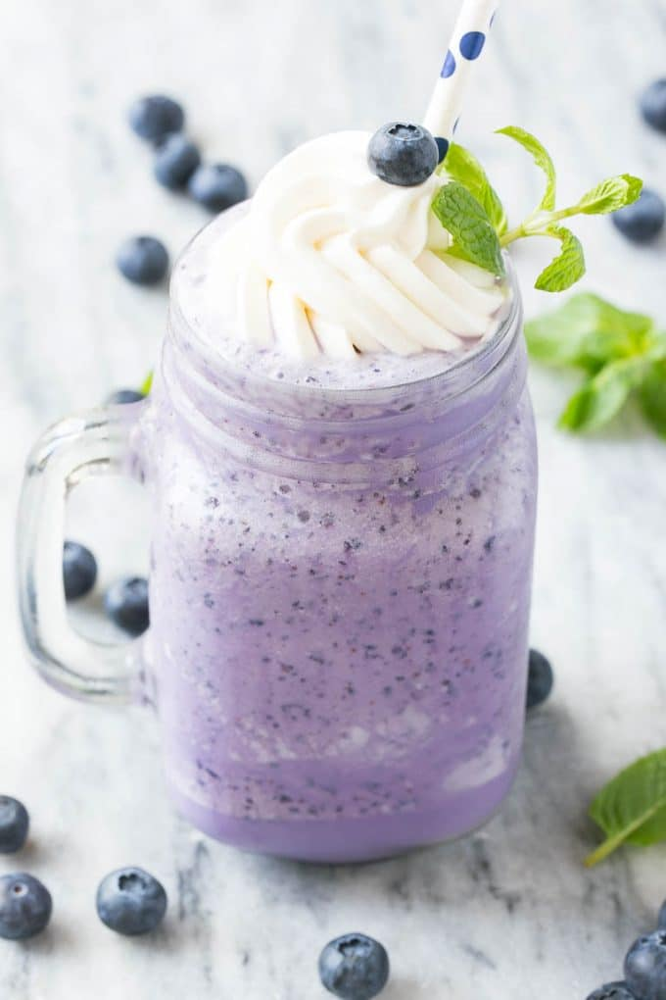

Blueberry Milkshake
Prep Time:
10 mins
Yeild:
4
Ingredients
2 cups all natural vanilla ice cream (I prefer Breyer's extra creamy vanilla)
2 cups milk
2 cups frozen blueberries
1 tbsp honey
Steps
Put all the ingredients in a blender or milkshake mixer and blend on high until smooth and creamy.
Pour into 2 glasses. add the remainder of blueberries, with fresh cream on top of the milkshake.Serve immediately
Back